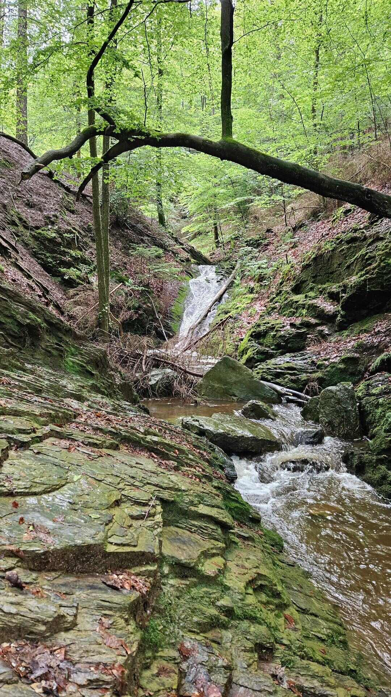

Ik ben niet alleen gefascineerd door virtuele werelden maar ook door de buitenwereld. Ik hou ervan om naar documentaires te kijken of podcasts te luisteren die gaan over de natuur, de kosmos of historische onderwerpen. Mijn favoriete documentaires zijn: The Blue Planet, Life in the Undergrowth, Planet Earth, Frozen Planet, Cosmos: A Spacetime Odyssey, The Planets, The Hidden Life of Trees. De natuur fascineert mij niet alleen maar brengt mij ook tot rust. Ik hou ervan om prachtige boswandelingen te maken in de Ardennen of om de Noordzee te bezichtigen aan onze kust. Mijn droom is om ooit naar Nieuw-Zeeland te reizen en daar de beroemde Great Walks te doen.
